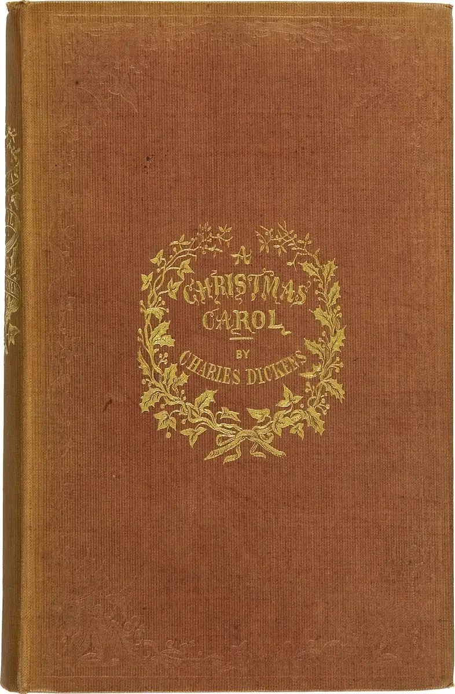
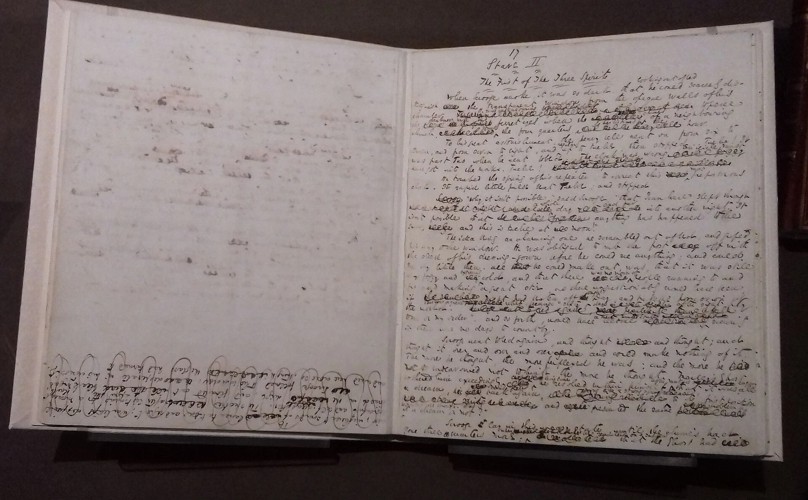
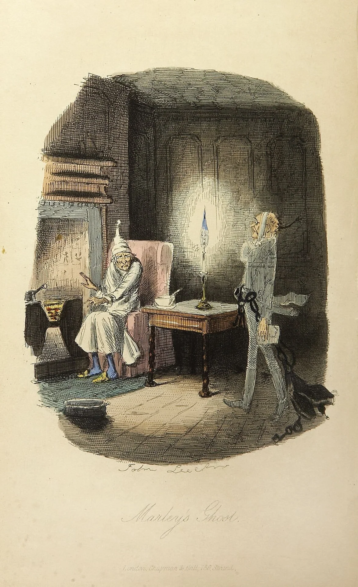
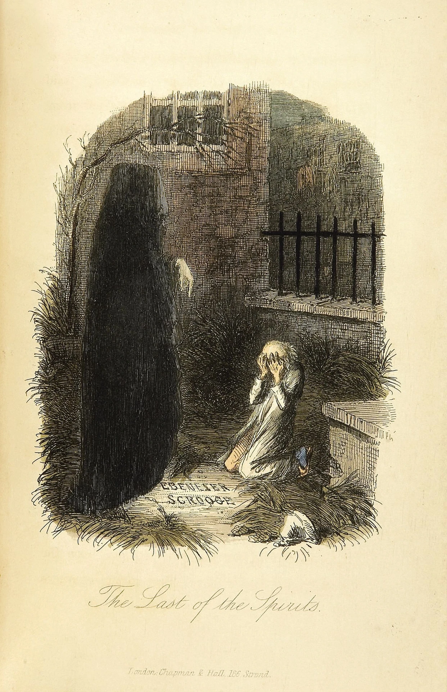

아직 펼치지 않은 카드겨울밤에 읽는 이야기 · 1크리스마스 캐럴구두쇠 노인이 하룻밤 사이에 다른 사람이 되었어요. 무엇이 그를 바꿨을까요?욕심쟁이 할아버지가 하룻밤 만에 착한 할아버지가 됐대! 무슨 일이 있었을까?
1843년 겨울영국 런던 · 디킨스의 『크리스마스 캐럴』
크리스마스 캐럴
1843년 겨울, 디킨스는 6주 만에 성탄 이야기 하나를 썼어요. 구두쇠 스크루지는 유령을 따라가 자기 서기 밥 크래칫의 작은 집을 들여다봐요. 책에 적힌 차례대로, 그 집 식구들이 차린 성탄 식탁을 하나씩 차려 보세요.
아주 옛날 영국 이야기야. 욕심쟁이 스크루지 할아버지가 유령이랑 같이 가난한 밥 아저씨네 집을 몰래 들여다봤대. 우리도 그 집 성탄 식탁을 차려 볼까?
검수 전 시안이에요(기준서 1판 보탬 11). 소설 속 장면은 디킨스의 손 원고(모건 도서관이 쪽마다 옮겨 적은 글)와 책의 글을 따랐고, 쓰던 때의 일은 친구 포스터의 전기와 도서관 자료를 따랐어요. 책 속 대사는 이 안내서가 우리말로 옮겼고, 부엌 무대는 이 안내서가 그렸어요. 상상은 ‘눈 감고 상상해 보기’에만 썼어요.
시안 확인용카드 단계 미리 보기
1
여섯 주의 원고
1843년 10월, 서른한 살의 찰스 디킨스는 맨체스터에 다녀온 지 일주일쯤 지나 이 이야기를 쓰기 시작했어요. 그리고 11월이 다 가기 전에 끝냈어요.
친구 존 포스터는 디킨스가 이 이야기를 쓰며 울고 웃고 또 울었다고 적었어요. 사람들이 다 잠든 밤이면 이야기를 생각하며 런던의 어두운 거리를 24~32킬로미터씩 걸었대요.

손 원고는 모두 66쪽이에요. 줄마다 긋고 고친 자국이 가득해요. 이 이야기의 하나뿐인 손 원고예요. 디킨스도 첫 장에 ‘이 책의, 나의 하나뿐인 원고’라고 적었어요.
책은 12월 19일에 나왔어요. 디킨스는 원고를 붉은 가죽으로 묶어, 돈을 빌려준 오랜 친구 토머스 미턴에게 선물했어요.
디킨스 아저씨가 손으로 쓴 진짜 원고야. 줄을 긋고 고친 자국이 엄청 많지?
물어보기이야기를 쓰다가 고치고 또 고친 적 있어? 왜 고쳤어?
2
쇠사슬을 끄는 유령
이야기는 성탄 전야에 시작해요. 춥고 매섭고 안개 낀 날, 스크루지의 사무실에서 서기 밥 크래칫은 석탄 한 덩이만 한 불 곁에서 일해요. 성탄 인사를 하러 온 조카에게 스크루지는 “흥, 허튼소리!” 하고 말해요.
그날 밤, 감기에 걸린 스크루지는 작은 불 곁에 죽 냄비를 올려 두고 앉아 있어요. 그때 7년 전 바로 이날 밤에 세상을 떠난 동업자 말리의 유령이 들어와요. 머리와 턱을 천으로 동여매고, 돈궤와 열쇠, 자물쇠, 장부, 문서, 쇠로 만든 무거운 돈주머니를 엮은 사슬을 끌면서요.

“나는 살면서 내가 만든 사슬을 차고 있네.”
『크리스마스 캐럴』 1장, 말리의 유령 · 이 안내서가 옮김
말리는 사람들이 바로 자기 일이었어야 했다고 뉘우쳐요. 그리고 세 유령이 찾아올 거라고 말해요. 첫째 유령은 내일, 종이 한 번 울릴 때 와요.
스크루지 할아버지 앞에 쇠사슬을 칭칭 감은 유령이 나타났어! 옛 친구 말리 할아버지래.
물어보기말리 유령은 왜 무거운 사슬을 끌고 다닐까?
3
크래칫네 식탁
둘째 유령, 현재의 유령은 스크루지를 데리고 성탄 날 아침 거리로 나가요. 그리고 밥 크래칫의 집 문턱에서 횃불을 흩뿌려 그 집에 복을 빌어요. 밥은 일주일에 15실링을 받아요. 그래도 유령은 방 네 칸짜리 그 집에 복을 빌었어요.
교회에서 돌아온 밥의 어깨에는 꼬마 팀이 타고 있어요. 팀은 작은 목발을 짚고, 다리는 쇠틀로 받치고 다녀요. 이제 식구들이 저마다 일을 맡아 성탄 식탁을 차려요. 아래 무대에 책에 적힌 차례대로 놓아 보세요.
팀은 교회에서 사람들이 자기를 보았으면 했다고 아버지에게 말했대요. 성탄 날에, 다리를 저는 사람을 걷게 하고 눈먼 사람을 보게 하신 분을 떠올리면 사람들이 기쁠 것 같아서요(마태복음 11장 5절).
밥은 스크루지를 위해서도 잔을 들어요. “이 잔치를 차려 주신 스크루지 씨를 위하여!” 크래칫 부인은 얼굴을 붉혀요. 그래도 남편과 성탄 날을 위해 잔을 들어요. 그 사람을 위해서는 아니라면서요.
식탁보, 거위, 감자, 푸딩, 난롯불, 잔! 하나씩 차려 보자.
물어보기불붙은 푸딩이 들어오면, 너는 뭐라고 외칠 것 같아?
4
마지막 유령, 그리고 아침
식탁 곁에서 스크루지는 꼬마 팀이 살 수 있겠느냐고 물어요. 유령은 가난한 난롯가에 빈자리 하나와, 주인 없이 고이 간직된 목발이 보인다고 대답해요.
셋째 유령은 검은 옷으로 온몸을 덮고, 말없이 손으로 가리키기만 해요. 그 끝에서 스크루지는 돌보는 이 없는 무덤에 새겨진 자기 이름을 읽어요. 그는 무릎을 꿇고 말해요. 성탄을 마음에 모시고, 한 해 내내 지키겠다고요.
눈을 뜨니 자기 침대, 바로 성탄 날 아침이었어요. 스크루지는 꼬마 팀보다 두 배나 큰 칠면조를 크래칫네로 보내고, 이튿날 밥의 봉급을 올려 줘요. 죽지 않은 꼬마 팀에게 그는 둘째 아버지가 되었어요.
그리고 책은 이렇게 끝나요. 크래칫네 식탁에서 꼬마 팀이 맨 마지막에 했던 그 말이에요.

“그리하여 꼬마 팀이 말한 대로, 하나님, 우리 모두에게 복을 주세요!”
『크리스마스 캐럴』의 마지막 문장 · 디킨스 손 원고 66쪽 · 이 안내서가 옮김
마지막 유령은 아무 말도 없이 손으로만 가리켜. 스크루지 할아버지는 그 뒤로 완전히 달라졌대!
물어보기큰 칠면조가 도착했을 때, 꼬마 팀네 식구들은 어떤 얼굴이었을까?
눈 감고 상상해 보기
좁은 부엌에 김이 가득해요. 빨래하는 날 같은 냄새가 나더니, 음식점과 과자 가게가 나란히 붙은 듯한 냄새가 퍼져요. 파란 불꽃을 두른 푸딩이 들어오는 순간 모두 숨을 멈춰요. 난롯불에서 군밤이 탁탁 튀고, 창밖에는 눈이 내리기 시작해요.
눈을 감아 봐. 부엌에 김이 모락모락, 푸딩에 파란 불이 활활. 난로에서 군밤이 탁탁 튀어!
나의 자리
밥은 그 식탁에서 스크루지를 위해서도 잔을 들었어요. 꼬마 팀이 말한 ‘우리 모두’에, 나라면 누구까지 넣을 수 있을까요?
꼬마 팀은 ‘우리 모두에게 복을!’ 하고 말했어. 너라면 그 ‘모두’에 누구누구를 넣고 싶어?
마음에 닿는 한 줄을 고르거나 직접 써 보세요. 한 줄을 남기면 이 자리의 도장이 찍혀요. 이 기기에만 저장돼요.
더 깊이
궁금한 칸만 펼쳐 읽어도 괜찮아요.
알고 보면
노래 한 절, 한 절 책의 온 제목은 『산문으로 쓴 크리스마스 캐럴: 성탄 유령 이야기』예요. 디킨스는 다섯 장을 ‘절’(stave, 노래의 한 절)이라고 불렀어요. 노래처럼 한 절씩 읽히는 이야기예요.
빵집 화덕 그때 영국에는 집에 화덕이 없는 집이 많았어요. 그런 집은 성탄 날 거위를 동네 빵집에 맡겨 구웠어요. 3장에도 저녁거리를 들고 빵집으로 가는 사람들이 나와요. 유령은 그 사람들 위에도 횃불을 뿌려 줘요.
성경 그림 타일 1장은 스크루지 방의 벽난로 둘레에 성경 이야기를 그린 옛 네덜란드 타일이 붙어 있었다고 적어요. 리치의 「말리의 유령」에도 난로 둘레에 작은 그림 타일이 보여요.
15실링 실링은 그때 영국 돈의 단위예요. 20실링이 1파운드였어요. 밥은 일주일에 15실링을 받았어요.
책 한 권에 들인 정성 디킨스는 책 만드는 일을 모두 직접 맡아, 존 리치에게 손으로 색칠한 판화 네 점과 목판화 네 점을 그리게 했어요. 책값은 5실링이었어요. 글래스고 대학 도서관은 이 값으로는 들인 돈만큼 이익이 나지 않았다고 적어요.
기록마다 다른 점
나온 날 모건 도서관은 1843년 12월 19일, 글래스고 대학 도서관은 12월 17일이라고 적어요.
얼마나 빨리 팔렸나 포스터의 전기는 첫 6,000부가 나온 첫날에 다 팔렸다고 적었고, 글래스고 대학 도서관은 성탄까지 다 팔렸다고 적어요.
마지막 문장 손 원고에는 ‘God Bless Us Every One!’으로, 인쇄된 책에는 ‘God bless Us, Every One!’으로 적혀 있어요.
원고 쪽수 모건 도서관의 해설은 66쪽짜리 원고라고 하고, 같은 목록의 묶음 설명에는 68쪽이라고 적어요.
원고와 그림을 직접 보기
확인한 날 · 2026년 11월 18일 · 바뀌기 쉬운 정보라 정기적으로 다시 확인해요
뉴욕 모건 도서관은 이 손 원고를 누리집에서 한 쪽씩 넘겨 볼 수 있게 열어 두었어요. 쪽마다 옮겨 적은 글도 함께 있어요. 크래칫네 식탁은 36~40쪽이에요.
모건 도서관은 해마다 성탄 무렵 이 원고를 펼쳐 전시하고, 해마다 한 쪽씩 넘겨요. 전시 때는 미리 확인해 주세요.
책의 차례대로 금박
3장에 적힌 차례(식탁보부터 잔 셋까지)대로 크래칫네 식탁을 다 차리면 카드에 금박이 입혀져요.
식탁보 → 거위 → 감자와 사과 소스 → 불붙인 푸딩 → 난롯불과 군밤 → 잔 셋 차례로 놓기
아이와 함께 채색
아이와 함께 ‘영화처럼 보기’를 끝까지 보면 카드가 채색돼요.
아이와 함께 ‘영화처럼 보기’를 끝까지 보기
근거 보기 (18)
- 모건 도서관 목록: 『크리스마스 캐럴』 손 원고(MA 97) — 6주 만에 씀, 66쪽, 하나뿐인 원고, 12월 19일 출간, 미턴에게 선물, 표제지의 ‘My own, and only, MS of the Book’
- 모건 도서관: 손 원고 쪽마다 옮겨 적은 글 — 36쪽(밥의 15실링·방 네 칸 집·식탁보·빵집 앞 거위 냄새)
- 모건 도서관: 손 원고 37쪽 — 교회에서 돌아온 밥과 팀(어깨 위·목발·쇠틀), 팀이 교회에서 한 바람, 주전자, 거위를 가지러 감
- 모건 도서관: 손 원고 38쪽 — 대포알 같은 푸딩, 브랜디 불꽃, 호랑가시나무
- 모건 도서관: 손 원고 39쪽 — 식탁 치우기, 사과·오렌지·군밤, 잔 셋, 밥의 건배와 팀의 말, 빈자리와 목발
- 모건 도서관: 손 원고 40쪽 — 크래칫 부인의 건배
- 모건 도서관: 손 원고 66쪽 — 책의 마지막 문장(손 원고의 글자 모양)
- 모건 도서관: 손 원고 17쪽 — 2장이 시작되는 쪽(사진 속 쪽)
- 모건 도서관 전시: 2025~26 『크리스마스 캐럴』 — 1843년 10월부터 6주, 붉은 가죽 제본, 해마다 한 쪽씩 넘김
- 존 포스터, 『찰스 디킨스의 생애』 1권(1872, 1876 판) 4부 1~2장 — 쓰기 시작한 때와 끝낸 때, 울고 웃으며 밤거리를 걸은 일, 첫날의 판매
- Lit2Go(사우스플로리다 대학): 『크리스마스 캐럴』 1장 — 추운 날, 석탄 한 덩이 불, “Bah! Humbug!”, 7년 전 이날 밤, 말리의 사슬
- Lit2Go: 3장 — 크래칫네 식탁의 차례
- Lit2Go: 4장 — 검은 옷의 유령, 무덤의 이름, 성탄을 한 해 내내 지키겠다는 말
- Lit2Go: 5장 — 성탄 날 아침, 팀보다 두 배 큰 칠면조, 봉급, 둘째 아버지, 마지막 문장
- 글래스고 대학 도서관: 이달의 책(1999년 12월) — 12월 17일, 성탄까지 6,000부, 리치의 판화 여덟 점, 5실링
- 잉글리시 헤리티지(샘 빌턴, 2025): 화덕이 없으면 거위를 빵집에 맡겨 구움
- 케임브리지 대학 도서관 특별 장서 블로그(2016): 『크리스마스 캐럴』 그림의 역사
- 위키미디어 공용: 손 원고 사진 정보(CC0)
그림·사진·소리 출처
‘처음 만나는 기독교 문화’의 깊은 카드예요. 실제 인물의 사진은 쓰지 않았어요. 카드 단계와 남긴 글은 이 기기에만 저장돼요.